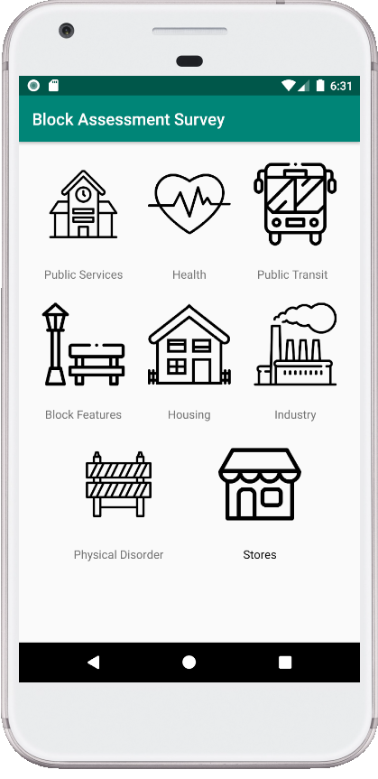
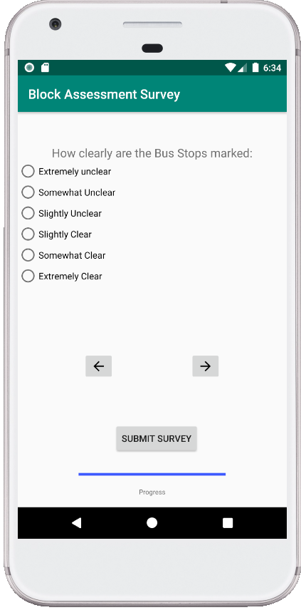

| Block Assessment Survey. | |
| External link to .apk (Github) | |
| External link to source zip (Github) | |
|
App Description
Creating unique community driven datasets is made easier by allowing users to complete numerous surveys regarding livability of their neighborhoods. Utilizing Firebase realtime data storage and gps tools, community organizers can more easily generate data that can lead to real change in their neighborhoods. |
|
|  |  |
| External link to YouTube video | |
|
List of external libraries and code used in this project
Firebase Libraries, Google Geolocator |
|